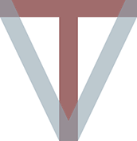

Welcome to the website of a VT-shaped student!
Please feel free to navigate through this website to learn more about what it means to be a solid VT-shaped student. Enjoy!

INTRODUCTION
About Me:
Hi there! My name is Keertana Srinivasan and I wrote the content for this website, while the template, Prologue, was designed by HTML5 UP. I'm currently a rising senior at Virginia Tech. I'm double majoring in business information technology and creative writing and minoring in entrepreneurship.

My Experience in Digital Writing:
I have a fair amount of experience in digital writing, mainly by using it in my daily life. By this, I mean that I have experience writing blog posts on Tumblr, condensing my thoughts into 140 character tweets on Twitter, writing status updates on Facebook, updating my LinkedIn profile, and e-mailing in a professional and personal manner. In addition to this, I have also written for a few professional blogs in the past. I have also used various websites to publish my poetry, essays, and short stories on the web. During my summer internship last year, I also gained some experience in digital writing. I created several powerpoints to explain the projects that my team was working on, to other colleagues. I also used Microsoft Sharepoint during my internship to post summaries and other critical information regarding the health policies my team was working with. These are just some examples of the digital writing experience I have. I've learned a lot more through this class than I expected, and I'm so excited to continue the journey!
Where I Stand in the Spectrum for the VT-shaped Student Concept:
I would say I'm more on the love side of the spectrum than the hate side when looking at the idea of a VT-shaped Student. I agree with most aspects of it. I do believe it is essential to have
MY INTERESTS
INSERT BLAH BLAH
Essay
What is the VT0shaped student?:
My Claim: I believe that I am in the process of becoming an ideal VT-shaped student because I have gradually
The Vertical Component of the T-shaped student:
The Horizontal Component of the T-shaped student:
The V of the VT-shaped Student: The V-component of the student-shaped model is my favorite component, because it allows me to implement the passion and the drive that I have. In the V-component, we have the opportunity to apply the knowledge we have learned to the real world and provides us with a different form of learning. I enjoy this component because it allows us to pursue a passion
My Plans and Goals:
I am on a constant path to self-improvement and betterment. I believe that it's extremely important to always be the best person we can be, and I appreciate that the idea of the VT-shaped student encourages and challenges that belief. While I am proud of my achievements thus far, I believe I still have a ways to go, which is why my claim was that I am in the process of becoming a VT-shaped Student. My plans for the future are to involve myself more in the Virginia Tech community's resources. I'll be more specific. This past year, I realized I wasn't being involved enough
My Recommendations:
Some recommendations I would make to an incoming Virginia Tech student
CONTACT
I hope you have enjoyed looking through my website! If you have any questions, you can feel free to contact me using the form below.
Sources